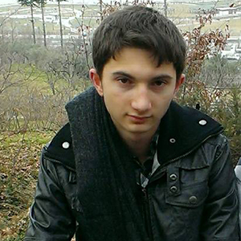

DEVELOPERS
Ahmet SAY
Front-end & API

Ali İhsan KARABAL
Back-end
Cengizhan ÖZ
Web Developer

Enescan Uyar
Designer
Tarık KAYA
Designer
Ümit Can AGBULAK
Front-end
We admire games.
Our company is based on mobile games. We are developing in Android since 2015. We are looking for opportunities to get a place in IOS Appstore and virtual-augmented reality sector.
Be one of the best companies in the sector by using developing technology and creative ideas.
We develop games that improve people's skills such as reflex, caution, memory and patience.
a. Project Title:
Try Hard
b. Project Definiton:
Our project is a mobile game that tests players skills in various ways such as speed, memory, caution, intelligence. The game has different categories for each skill. It is available for all devices that supports android 4.0 or higher. There is an interface that allows to see other player's activities.
c. Project Goal:
The game aims to improve basic skills of players. So that they can use their skills in anywhere in their life.
d. Project Scope:
In this project we've tried to spread our workforce on an equal weekly basis. We finished our project in eight weeks with constant progress logic, also most importantly we’ve completed every tasks on the requirements list in this eight week period. As a result of our efficient work, we designed a game that our users could enjoy and think while playing. Try Hard’s one of the main goal is that being a game that could improve users by forcing their basic brain functions. We had it and will improve our game until we achieve this task.
e. Application Areas:
Our project is a game, so our application area is users who play our game. But unlike the other games there is no certain user profile. Anyone who likes to challenge themself can download and play our game.
f. Background:
There are lots of puzzle games in the market. Unlike the other puzzle games that contain only one category to play, our game will have different categories for each skill. It will also contain repeatable scenarios like typing test, tap frequency, visual memory, word retrieval. In this way, even if players have completed the game, they still will have something to improve themselves.
Ahmet Say: Frontend Developer & API
Ali İhsan Karabal: Backend Developer
Cengizhan Öz: Web Developer
Enes Can Uyar: UI Designer
Tarık Kaya: UI Designer
Ümit Can Ağbulak: Frontend Developer
1. Week (16.10.2017 - 23.10.2017)
Scene connections
Menu functions
2. Week (30.10.2017 - 06.11.2017)
Gameplay:
- Intelligence category
- Score system
3. Week (06.11.2017 - 13.11.2017)
UI design:
- Buttons
- Sprites
Gameplay:
- Typing test category
- Tapping test category
4. Week (13.11.2017 - 20.11.2017)
UI design:
- Responsive design for every device
Gameplay:
- Visual memory category
- Word memory category
5. Week (20.11.2017 - 27.11.2017)
UI design:
- New sprites for gameplay
Gameplay:
- Bug fixes
- Statistics section
- Achievement conditions
API:
- Google Play Game Services
a. User authenticate
b. Achievements
c. Leaderboards
6. Week (04.12.2017 - 11.12.2017)
Gameplay:
- Minor changes in categories and score system
- How to Play section
API:
- Google Play Game Services
a. Cloud save
Multi Language Support:
- Language transition system
7. Week (11.12.2017 - 18.12.2017)
UI design:
- New menu designv
Gameplay:
- Bug fixes
Multi Language Support:
- All translations between Turkish - English
8. Week (18.12.2017 - 25.12.2017)
UI design:
- Fonts
- Audio
- Scene transitions
Testing
Final build
A. Functional Requirements
- Includes an intellectual scenario with multiple levels.
- Levels will be sorted from easy to hard in intellectual scenario.
- Includes repeatable scenarios like typing test, tapping test, word memory, visual memory.
- A timer will count the time spent in the level.
- When the given time is up, the level will end.
- A certain amount of time will be given for each level.
- Players will get a score when they complete the level.
- The score can be a time value or a specific point.
- There will be an interface to display Google Play Game Services.
- Sign in will be automatic.
- There will be user achievements to promote the player to play the game more.
- Leaderboards will show the global score.
- Cloud save will allow to play the game with different accounts.
B. Non-functional Requirements
1) Performance
We will build the game in Unity, which is one of the best 2D game engines. Our game will be optimized for scripts, garbage collector and graphic rendering after building the raw game. These conditions will provide high performance for our users.
2) Scalability
Our game will be accesible for all Play Store users. There is no user limitation to play the game, so scalability of the system will be high.
3) Security
The other main goal of our game is protecting user data. So user's progress will be automatically saved in both local device and cloud. Cloud save will allow to load the player's progress when needed in particular cases such as re-installation, device issues etc.
4) Maintainability
Our game runs on mobile and tablet side. This system will be written in Unity with Android SDK tools and C#. The game will always updated and debugged according to the user's feedback and other new features.
5) Usability
Our game will be easy for user. The soft graphics and the specified color palette will be designed for not exhaust the user's eyes. A simple game menu (which will support multi-languages) and detailed walkthrough will make it easier for the user to understand game mechanics.
6) Availability
Our game will be available for more than 12000 different devices that supports android 4.0 or higher. Users don't have to connect to internet to play the game. Their in-game progress will be loaded in their google accounts when they connect the internet.
a. Usage Scenarios:
Use Case 1: Play Intelligence
Use Case 2: Play Typing Test
Use Case 3: Play Tapping Test
Use Case 4: Play Word Memory
Use Case 5: Play Visual Memory
Use Case 6: Save a Score
Use Case 7: Unlock an Achievement
Use Case 8: View Achievements Interface
Use Case 9: View Leaderboards Interface
Use Case 10: View How to Play Section
Use Case 11: View Statistics Section
Use Case 12: Set the Audio
Use Case 13: Set the Language
Use Case 14: Sign in / out to Google Play
Use Case 15: Go back
Use Case 16: Manage Gameplay
b. Use Case Glossary
Play Intelligence : User plays the intelligence category.
Play Typing Test : User plays the typing test category.
Play Tapping Test : User plays the tapping test category.
Play Word Memory : User plays the word memory category.
Play Visual Memory : User plays the visual memory category.
Save a Score : When the user finishes a category, the game saves the score if it's higher than the previous score.
Unlock an Achievement : If the user achieves a certain condition, the game notifies the achievement and updates the achievement interface.
View Achievements Interface : Game shows user's achievements with their explanations.
View Leaderboards Interface : Game shows chosen category's leaderboard.
View How to Play Section : Game gives information about each category to the user.
View Statistics Section : If user signed in with his/her account, the game shows the highscore on that account. Otherwise, it shows scores from the device.
Set the Audio : Game sets the audio to "on" or "off" according to the user's choice.
Set the Language : Game sets the language according to the user's choice.
Sign in / out to Google Play : Allows user sign in to his/her account or sign out from that account.
Go Back : Shows user to the previous part from that section.
Manage Gameplay : In the gameplay, game displays and runs necessary components according to the category's walkthrough.
Use Case Name: Play Intelligence
Actors: User
Triggers: The user decides to play intelligence category.
Pre-conditions: The user shouldn't go back until the category is finished.
Post-conditions: No post conditions required.
Normal Flow:
1. The user taps the "Intelligence" button.
2. The user reads the question.
3. The user thinks the answer of the question.
4. The user answers the question by using buttons.
5. The user continues to the next question until all questions are answered.
6. The user gets a final message and the score.
Alternate Flow:
5A1
1. The given time ends before all questions are answered.
2. The user gets a final message.
3. The use case ends.
Use Case Name: Play Typing Test
Actors: User
Triggers: The user decides to play typing test category.
Pre-conditions: The user shouldn't go back until the category is finished.
Post-conditions: The user should get a specific score.
Normal Flow:
1. The user taps the "Typing Test" button.
2. The user reads the information about the category and taps "Start" button.
3. The user reads the word that should be typed in the word list.
4. The user types the word correctly by using the keyboard.
5. The user types the next word until the time is up.
6. The given time ends.
7. The user gets a final message and the score.
Alternate Flow:
4A1
1. The user couldn't write the word correctly.
2. The user uses the "Character Delete" button to delete wrong letters.
3. The use case continues from step 4.
Use Case Name: Play Tapping Test
Actors: User
Triggers: The user decides to play tapping test category.
Pre-conditions: The user shouldn't go back until the category is finished.
Post-conditions: The user should get a specific score.
Normal Flow:
1. The user taps the "Tapping Test" button.
2. The user reads the information about the category and taps "Start" button.
3. The user taps the given button as much as possible and makes it move randomly.
4. The given time ends.
5. The user gets a final message and the score.
Use Case Name: Play Word Memory
Actors: User
Triggers: The user decides to play word memory category.
Pre-conditions: The user shouldn't go back until the category is finished.
Post-conditions: The user should get a specific score.
Normal Flow:
1. The user taps the "Word Memory" button.
2. The user reads the information about the category and taps "Start" button.
3. The user gets several words that should be memorized in a given time.
4. The user tries to memorize all words.
5. The given time ends.
6. The user gets a new screen with similar words on the previous screen and different words from a word list.
7. The user chooses words that were existed on the previous screen by tapping their buttons in a given time.
8. The given time ends.
9. The user gets a final message and the score.
Use Case Name: Play Visual Memory
Actors: User
Triggers: The user decides to play visual memory category.
Pre-conditions: The user shouldn't go back until the category is finished.
Post-conditions: The user should get a specific score.
Normal Flow:
1. The user taps the "Visual Memory" button.
2. The user reads the information about the category and taps "Start" button.
3. The user gets several colors respectively in a given time.
4. The user tries to memorize all colors and their order.
5. The given time ends.
6. The user gets a new screen to answer the color's order.
7. The user chooses right colors by tapping their buttons.
8. The user gets a final message and the score.
Use Case Name: Save a Score
Actors: Game
Triggers: The user finishes a category.
Pre-conditions: The new score should be greater than the previous score.
Post-conditions: The score should be saved locally in any case.
Normal Flow:
1. The game saves the user's score locally.
2. The game verifies if the user is signed in to Google Play.
3. The game posts the user's score to leaderboard.
Alternate Flow:
2A1
1. The game determines that the user is not signed in.
2. The use case ends.
Use Case Name: Unlock an Achievement
Actors: Game
Triggers: The user finishes a category.
Pre-conditions: The user should signed in to Google Play. The achievement mustn't have been unlocked before. The user should complete the condition of the achievement.
Post-conditions: The achievement details should be shown on the screen when it's unlocked.
Normal Flow:
1. The game finds the achievement that should be unlocked according to the user's gameplay result.
2. The game unlocks the achievement.
3. The game adds the determined experience point to the user's Google Play profile.
Use Case Name: View Achievements Interface
Actors: User, Game
Triggers: The user decides to see the achievements interface.
Pre-conditions: The user should signed in to Google Play.
Post-conditions: The user should see all his / her achievements.
Normal Flow:
1. The user taps the "Achievements" button on the main menu.
2. The game displays the achievements interface.
Use Case Name: View Leaderboards Interface
Actors: User, Game
Triggers: The user decides to see the leaderboards interface.
Pre-conditions: The user should signed in to Google Play.
Post-conditions: The user should see his / her score on the leaderboard.
Normal Flow:
1. The user taps the "Leaderboards" button on the main menu.
2. The game displays the leaderboards interface.
3. The user selects a leaderboard from the list.
4. The game displays the chosen leaderboard.
Use Case Name: View How to Play Section
Actors: User, Game
Triggers: The user decides to see the How to Play section.
Pre-conditions: No pre-conditions required.
Post-conditions: The user should access all informations in the How to Play section.
Normal Flow:
1. The user taps the "How to Play" button on the main menu.
2. The game displays the "How to Play" scene.
3. The user taps "previous" or "next" buttons to read all informations about the game.
Use Case Name: View Statistics Section
Actors: User, Game
Triggers: The user decides to see the Statistics section.
Pre-conditions: No pre-conditions required.
Post-conditions: The user should access his / her all scores in the Statistics section.
Normal Flow:
1. The user taps the "Statistics" button on the main menu.
2. The game displays the "Statistics" scene.
3. The game verifies if the user is signed in to Google Play.
4. The game displays the user's score from his / her leaderboard data.
Alternate Flow:
3A1
1. The game determines that the user is not signed in.
2. The game displays the user's score from the local device.
3. The use case ends.
Use Case Name: Set the Audio
Actors: User, Game
Triggers: The user decides to mute / unmute the background music.
Pre-conditions: No pre-conditions required.
Post-conditions: The game should set the audio according to the user's decision.
Normal Flow:
1. The user taps the "Settings" button on the main menu.
2. The game displays setting buttons.
3. The user taps "mute / unmute" button.
4. The game stops the audio source if the background music is playing.
Alternate Flow
4A1
1. The game starts playing the audio source if the background music is not playing.
2. The use case ends.
Use Case Name: Set the Language
Actors: User, Game
Triggers: The user decides to set the game's language.
Pre-conditions: No pre-conditions required.
Post-conditions: The game should set the language according to the user's decision.
Normal Flow:
1. The user taps the "Settings" button on the main menu.
2. The game displays setting buttons.
3. The user taps "language" button until his / her wanted language is displayed.
4. The game sets the game's language according to the user's change.
Use Case Name: Sign in / out to Google Play
Actors: User, Game
Triggers: The user decides sign in / out to Google Play
Pre-conditions: No pre-conditions required.
Post-conditions: The game should manage Google Play authenticate according to the user's decision.
Normal Flow:
1. The user taps the "Settings" button on the main menu.
2. The game displays setting buttons.
3. The user taps "Google" button to sign in / out.
4. The game disconnects the user from Google Play if he / she is connected.
Alternate Flow:
4A1
1. The game connects the user to Google Play if he / she is disconnected.
2. The use case ends.
Use Case Name: Go Back
Actors: User, Game
Triggers: The user decides to go back from the current section.
Pre-conditions: No pre-conditions required.
Post-conditions: The user should go back from his / her current section.
Normal Flow:
1. The user taps the "Back" button.
2. The game closes the current scene.
3. The game displays the previous scene.
Alternate Flow:
2A1
1. The game determines that current scene is main menu, so there is no previous scene.
2. The game shuts down itself.
3. The use case ends.
Use Case Name: Manage Gameplay
Actors: Game
Triggers: The user taps the button of a category.
Pre-conditions: The gameplay shouldn't be interrupted.
Post-conditions: No post-conditions required.
Normal Flow:
1. The game loads the gameplay of the category.
2. The game displays necessary components according to the category's walkthrough.
3. The game stores user input temporarily to calculate a score when the gameplay is finished.
4. The gameplay ends.
5. The game calculates the score based on temporarily stored data.
6. The game displays a final message with the score and a retry button.
Alternate Flow:
4A1
1. The gameplay doesn't end in given time.
2. The use case ends.
Front-end & API
Back-end
Web Developer
Designer
Designer
Front-end


Advice, Complain, Improve...